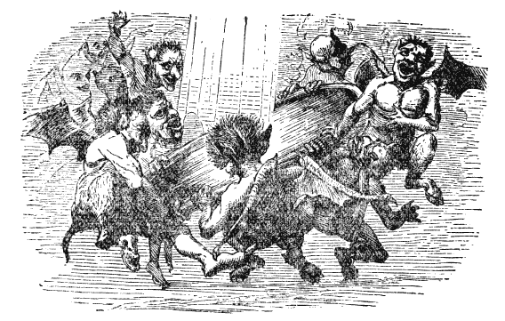
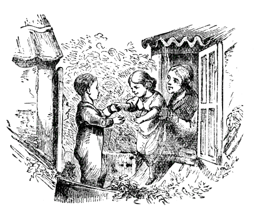
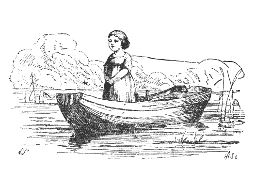
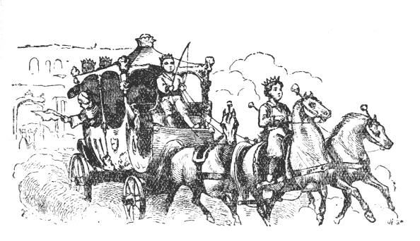
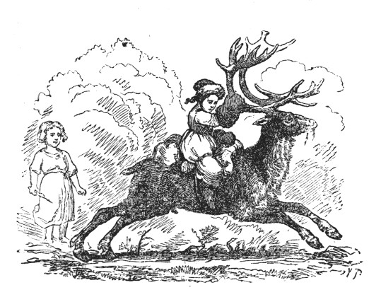
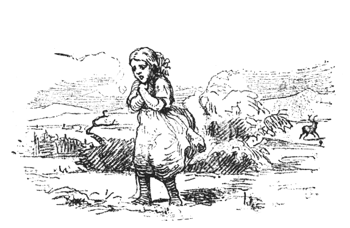
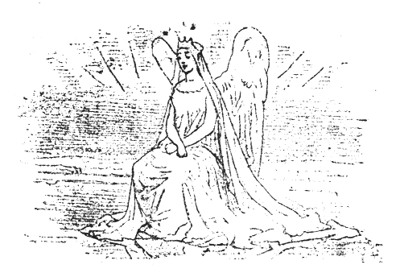
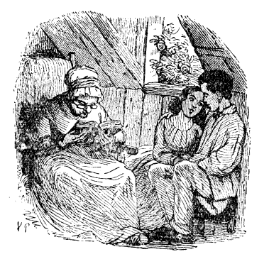

| 雪の女王 七つのお話でできているおとぎ物語 | |
| アンデルセンハンス・クリスチャン | |
| (2012) | |
雪の女王
七つのお話でできているおとぎ物語
ハンス・クリスティアン・アンデルセン
楠山正雄訳
第一のお話
鏡とそのかけらのこと

さあ、きいていらっしゃい。はじめますよ。このお話をおしまいまできくと、だんだんなにかがはっきりしてきて、つまり、それがわるい魔法使
のお話であったことがわかるのです。この魔法使というのは、なかまでもいちばんいけないやつで、それこそまがいなしの「悪魔
」でした。
さて、ある日のこと、この悪魔は、たいそうなごきげんでした。というわけは、それは、鏡をいちめん作りあげたからでしたが、その鏡というのが、どんなけっこうなうつくしいものでも、それにうつると、ほとんどないもどうぜんに、ちぢこまってしまうかわり、くだらない、みっともないようすのものにかぎって、よけいはっきりと、いかにもにくにくしくうつるという、ふしぎなせいしつをもったものでした。どんなうつくしいけしきも、この鏡にうつすと、煮
くたらしたほうれんそうのように見え、どんなにりっぱなひとたちも、いやなかっこうになるか、どうたいのない、あたまだけで、さかだちするかしました。顔は見ちがえるほどゆがんでしまい、たった、ひとつぼっちのそばかすでも、鼻や口いっぱいに大きくひろがって、うつりました。
「こりゃおもしろいな。」と、その悪魔はいいました。ここに、たれかが、やさしい、つつましい心をおこしますと、それが鏡には、しかめっつらにうつるので、この魔法使の悪魔は、じぶんながら、こいつはうまい発明
だわいと、ついわらいださずには、いられませんでした。
この悪魔は、魔法学校をひらいていましたが、そこにかよっている魔生徒どもは、こんどふしぎなものがあらわれたと、ほうぼうふれまわりました。
さて、この鏡ができたので、はじめて世界や人間のほんとうのすがたがわかるのだと、このれんじゅうはふいちょうしてあるきました。で、ほうぼうへその鏡をもちまわったものですから、とうとうおしまいには、どこの国でも、どの人でも、その鏡にめいめいの、ゆがんだすがたをみないものは、なくなってしまいました。こうなると、図にのった悪魔のでしどもは、天までも昇 っていって、天使 たちや神さままで、わらいぐさにしようとおもいました。ところで、高く高くのぼって行けば、行くほど、その鏡はよけいひどく、しかめっつらをするので、さすがの悪魔も、おかしくて、もっていられなくなりました。でもかまわず、高く高くとのぼっていって、もう神さまや天使のお住居 に近くなりました。すると、鏡はあいかわらず、しかめっつらしながら、はげしくぶるぶるふるえだしたものですから、ついに悪魔どもの手から、地の上へおちて、何千万、何億万、というのではたりない、たいへんな数に、こまかくくだけて、とんでしまいました。ところが、これがため、よけい下界 のわざわいになったというわけは、鏡のかけらは、せいぜい砂つぶくらいの大きさしかないのが、世界じゅうにとびちってしまったからで、これが人の目にはいると、そのままそこにこびりついてしまいました。すると、その人たちは、なんでも物をまちがってみたり、ものごとのわるいほうだけをみるようになりました。それは、そのかけらが、どんなちいさなものでも、鏡がもっていたふしぎな力を、そのまま、まだのこしてもっていたからです。なかにはまた、人のしんぞうにはいったものがあって、そのしんぞうを、氷のかけらのように、つめたいものにしてしまいました。そのうちいくまいか大きなかけらもあって、窓ガラスに使われるほどでしたが、そんな窓ガラスのうちから、お友だちをのぞいてみようとしても、まるでだめでした。ほかのかけらで、めがねに用いられたものもありましたが、このめがねをかけて、物を正しく、まちがいのないように見ようとすると、とんださわぎがおこりました。悪魔はこんなことを、たいへんおもしろがって、おなかをゆすぶって、くすぐったがって、わらいました。ところで、ほかにもまだ、こまかいかけらは、空のなかにただよっていました。さあ、これからがお話なのですよ。
第二のお話
男の子と女の子

たくさんの家がたてこんで、おおぜい人がすんでいる大きな町では、たれでも、庭にするだけの、あき地をもつわけにはいきませんでした。ですから、たいてい、植木
ばちの花をみて、まんぞくしなければなりませんでした。
そういう町に、ふたりのまずしいこどもがすんでいて、植木ばちよりもいくらか大きな花ぞのをもっていました。そのふたりのこどもは、にいさんでも妹でもありませんでしたが、まるでほんとうのきょうだいのように、仲よくしていました。そのこどもたちの両親は、おむこうどうしで、その住んでいる屋根うらべやは、二軒の家の屋根と屋根とがくっついた所に、むかいあっていました。そのしきりの所には、一本の雨どい
がとおっていて、両方から、ひとつずつ、ちいさな窓が、のぞいていました。で、といをひとまたぎしさえすれば、こちらの窓からむこうの窓へいけました。
こどもの親たちは、それぞれ木の箱を窓の外にだして、台所でつかうお野菜をうえておきました。そのほかにちょっとしたばら
をひと株うえておいたのが、みごとにそだって、いきおいよくのびていました。ところで親たちのおもいつきで、その箱を、とい
をまたいで、横にならべておいたので、箱は窓と窓とのあいだで、むこうからこちらへと、つづいて、そっくり、生きのいい花のかべを、ふたつならべたように見えました。えんどう豆のつるは、箱から下のほうにたれさがり、ばら
の木は、いきおいよく長い枝をのばして、それがまた、両方の窓にからみついて、おたがいにおじぎをしあっていました。まあ花と青葉でこしらえた、アーチのようなものでした。その箱は、高い所にありましたし、こどもたちは、その上にはいあがってはいけないのをしっていました。そこで、窓から屋根へ出て、ばらの花の下にある、ちいさなこしかけに、こしをかけるおゆるしをいただいて、そこでおもしろそうに、あそびました。
冬になると、そういうあそびもだめになりました。窓はどうかすると、まるっきりこおりついてしまいました。そんなとき、こどもたちは、だんろの上で銅貨
をあたためて、こおった窓ガラスに、この銅貨をおしつけました。すると、そこにまるい、まんまるい、きれいなのぞきあなができあがって、このあなのむこうに、両方の窓からひとつずつ、それはそれはうれしそうな、やさしい目がぴかぴか光ります、それがあの男の子と、女の子でした。男の子はカイ、女の子はゲルダといいました。夏のあいだは、ただひとまたぎで、いったりきたりしたものが、冬になると、ふたりのこどもは、いくつも、いくつも、はしごだんを、おりたりあがったりしなければ、なりませんでした。外
には、雪がくるくる舞
っていました。
「あれはね、白いみつばちがあつまって、とんでいるのだよ。」と、おばあさんがいいました。
「あのなかにも、女王ばちがいるの。」と、男の子はたずねました。この子は、ほんとうのみつばちに、そういうもののいることを、しっていたのです。
「ああ、いるともさ。」と、おばあさんはいいました。「その女王ばちは、いつもたくさんなかまのあつまっているところに、とんでいるのだよ。なかまのなかでも、いちばんからだが大きくて、けっして下にじっとしてはいない。すぐと黒い雲のなかへとんではいってしまう。ま夜中に、いく晩も、いく晩も、女王は町の通から通へとびまわって、窓のところをのぞくのさ。するとふしぎとそこでこおってしまって、窓は花をふきつけたように、見えるのだよ。」
「ああ、それ、みたことがありますよ。」と、こどもたちは、口をそろえて叫
びました。そして、すると、これはほんとうの話なのだ、とおもいました。
「雪の女王さまは、うちのなかへもはいってこられるかしら。」と、女の子がたずねました。
「くるといいな。そうすれば、ぼく、それをあたたかいストーブの上にのせてやるよ。すると女王はとろけてしまうだろう。」と、男の子がいいました。
でも、おばあさんは、男の子のかみの毛をなでながら、ほかのお話をしてくれました。
その夕方、カイはうちにいて、着物
を半分
ぬぎかけながら、ふとおもいついて、窓のそばの、いすの上にあがって、れいのちいさなのぞきあなから、外をながめました。おもてには、ちらちら、こな雪が舞
っていましたが、そのなかで大きなかたまりがひとひら、植木箱のはしにおちました。するとみるみるそれは大きくなって、とうとうそれが、まがいのない、わかい、ひとりの女の人になりました。もう何百万という数の、星のように光るこな雪で織
った、うすい白い紗
の着物
を着ていました。やさしい女の姿はしていましたが、氷のからだをしていました。ぎらぎらひかる氷のからだをして、そのくせ生きているのです。その目は、あかるい星をふたつならべたようでしたが、おちつきも休みもない目でした。女は、カイのいる窓のほうに、うなずきながら、手まねぎしました。カイはびっくりして、いすからとびおりてしまいました。すぐそのあとで、大きな鳥が、窓の外をとんだような、けはいがしました。
そのあくる日は、からりとした、霜日
よりでした。――それからは、日にまし、雪どけのようきになって、とうとう春が、やってきました。お日さまはあたたかに、照
りかがやいて、緑
がもえだし、つばめは巣をつくりはじめました。あのむかいあわせの屋根うらべやの窓も、また、あけひろげられて、カイとゲルダとは、アパートのてっぺんの屋根上の雨
どいの、ちいさな花ぞので、ことしもあそびました。
この夏は、じつにみごとに、ばらの花がさきました。女の子のゲルダは、ばらのことのうたわれている、さんび歌をしっていました。そして、ばらの花というと、ゲルダはすぐ、じぶんの花ぞののばらのことをかんがえました。ゲルダは、そのさんび歌を、カイにうたってきかせますと、カイもいっしょにうたいました。
「ばらのはな さきてはちりぬ
おさなごエス やがてあおがん」
ふたりのこどもは、手をとりあって、ばらの花にほおずりして、神さまの、みひかりのかがやく、お日さまをながめて、おさなごエスが、そこに、おいでになるかのように、うたいかけました。なんという、楽しい夏の日だったでしょう。いきいきと、いつまでもさくことをやめないようにみえる、ばらの花のにおいと、葉のみどりにつつまれた、この屋根の上は、なんていいところでしたろう。
カイとゲルダは、ならんで掛けて、けものや鳥のかいてある、絵本をみていました。ちょうどそのとき――お寺の、大きな塔
の上で、とけいが、五つうちましたが――カイは、ふと、
「あッ、なにかちくりとむねにささったよ。それから、目にもなにかとびこんだようだ。」と、いいました。
あわてて、カイのくびを、ゲルダがかかえると、男の子は目をぱちぱちやりました。でも、目のなかにはなにもみえませんでした。
「じゃあ、とれてしまったのだろう。」と、カイはいいましたが、それは、とれたのではありませんでした。カイの目にはいったのは、れいの鏡から、とびちったかけらでした。そら、おぼえているでしょう。あのいやな、魔法
の鏡のかけらで、その鏡にうつすと、大きくていいものも、ちいさく、いやなものに、みえるかわり、いけないわるいものほど、いっそうきわだってわるく見え、なんによらず、物事
のあら
が、すぐめだって見えるのです。かわいそうに、カイは、しんぞうに、かけらがひとつはいってしまいましたから、まもなく、それは氷のかたまりのように、なるでしょう。それなり、もういたみはしませんけれども、たしかに、しんぞうの中にのこりました。
「なんだってべそをかくんだ。」と、カイはいいました。「そんなみっともない顔をして、ぼくは、もうどうもなってやしないんだよ。」
「チェッ、なんだい。」こんなふうに、カイはふいに、いいだしました。「あのばらは虫がくっているよ。このばらも、ずいぶんへんてこなばらだ。みんなきたならしいばらだな。植わっている箱も箱なら、花も花だ。」
こういって、カイは、足で植木の箱をけとばして、ばらの花をひきちぎってしまいました。
「カイちゃん、あんた、なにをするの。」と、ゲルダはさけびました。
カイは、ゲルダのおどろいた顔をみると、またほかのばらの花を、もぎりだしました。それから、じぶんのうちの窓の中にとびこんで、やさしいゲルダとも、はなれてしまいました。
ゲルダがそのあとで、絵本
をもってあそびにきたとき、カイは、そんなもの、かあさんにだっこされている、あかんぼのみるものだ、といいました。また、おばあさまがお話をしても、カイはのべつに「だって、だって。」とばかりいっていました。それどころか、すきをみて、おばあさまのうしろにまわって、目がねをかけて、おばあさまの口まねまで、してみせました。しかも、なかなかじょうずにやったので、みんなはおかしがってわらいました。まもなくカイは、町じゅうの人たちの、身ぶりや口まねでも、できるようになりました。なんでも、ひとくせかわったことや、みっともないことなら、カイはまねすることをおぼえました。
「あの子はきっと、いいあたまなのにちがいない。」と、みんないいましたが、それは、カイの目のなかにはいった鏡のかけらや、しんぞうの奥ふかくささった、鏡のかけらのさせることでした。そんなわけで、カイはまごころをささげて、じぶんをしたってくれるゲルダまでも、いじめだしました。
カイのあそびも、すっかりかわって、ひどくこましゃくれたものになりました。――ある冬の日、こな雪がさかんに舞いくるっているなかで、カイは大きな虫目がねをもって、そとにでました。そして青いうわぎのすそをひろげて、そのうえにふってくる雪をうけました。
「さあ、この目がねのところからのぞいてごらん、ゲルダちゃん。」と、カイはいいました。なるほど、雪のひとひらが、ずっと大きく見えて、みごとにひらいた花か、六角の星のようで、それはまったくうつくしいものでありました。
「ほら、ずいぶんたくみにできているだろう。ほんとうの花なんか見るよりも、ずっとおもしろいよ。かけたところなんか、ひとつだってないものね。きちんと形をくずさずにいるのだよ。ただとけさえしなければね。」と、カイはいいました。
そののちまもなく、カイはあつい手ぶくろをはめて、そり
をかついで、やってきました。そしてゲルダにむかって、
「ぼく、ほかのこどもたちのあそんでいる、ひろばのほうへいってもいいと、いわれたのだよ。」と、ささやくと、そのままいってしまいました。
その大きなひろばでは、こどもたちのなかでも、あつかましいのが、そりを、おひゃくしょうたちの馬車の、うしろにいわえつけて、じょうずに馬車といっしょにすべっていました。これは、なかなかおもしろいことでした。こんなことで、こどもたちたれも、むちゅうになってあそんでいると、そこへ、いちだい、大きなそりがやってきました。それは、まっ白にぬってあって、なかにたれだか、そまつな白い毛皮
にくるまって、白いそまつなぼうしをかぶった人がのっていました。そのそりは二回ばかり、ひろばをぐるぐるまわりました。そこでカイは、さっそくそれに、じぶんのちいさなそりを、しばりつけて、いっしょにすべっていきました。その大そりは、だんだんはやくすべって、やがて、つぎの大通を、まっすぐに、はしっていきました。そりをはしらせていた人は、くるりとふりかえって、まるでよくカイをしっているように、なれなれしいようすで、うなずきましたので、カイはついそりをとくのをやめてしまいました。こんなぐあいにして、とうとうそりは町の門のそとに、でてしまいました。そのとき、雪が、ひどくふってきたので、カイはじぶんの手のさきもみることができませんでした。それでもかまわず、そりははしっていきました。カイはあせって、しきりとつなをうごかして、その大そりからはなれようとしましたが、小そりはしっかりと大そりにしばりつけられていて、どうにもなりませんでした。ただもう、大そりにひっぱられて、風のようにとんでいきました。カイは大声をあげて、すくいをもとめましたが、たれの耳にも、きこえませんでした。雪はぶっつけるようにふりしきりました。そりは前へ前へと、とんでいきました。ときどき、そりがとびあがるのは、生
がきや、おほりの上を、とびこすのでしょうか、カイはまったくふるえあがってしまいました。主のおいのりをしようと思っても、あたまにうかんでくるのは、かけざんの九九ばかりでした。
こな雪のかたまりは、だんだん大きくなって、しまいには、大きな白いにわとりのようになりました。ふとその雪のにわとりが、両がわにとびたちました。とたんに、大そりはとまりました。そりをはしらせていた人が、たちあがったのを見ると、毛皮のがいとうもぼうしも、すっかり雪でできていました。それはすらりと、背の高い、目のくらむようにまっ白な女の人でした。それが雪の女王だったのです。
「ずいぶんよくはしったわね。」と、雪の女王はいいました。「あら、あんた、ふるえているのね。わたしのくまの毛皮におはいり。」
こういいながら女王は、カイをじぶんのそりにいれて、かたわらにすわらせ、カイのからだに、その毛皮をかけてやりました。するとカイは、まるで雪のふきつもったなかに、うずめられたように感じました。
「まださむいの。」と、女王はたずねました。それからカイのひたいに、ほおをつけました。まあ、それは、氷よりももっとつめたい感じでした。そして、もう半分氷のかたまりになりかけていた、カイのしんぞうに、じいんとしみわたりました。カイはこのまま死んでしまうのではないかと、おもいました。――けれど、それもほんのわずかのあいだで、やがてカイは、すっかり、きもちがよくなって、もう身のまわりのさむさなど、いっこう気にならなくなりました。
「ぼくのそりは――ぼくのそりを、わすれちゃいけない。」
カイがまず第一におもいだしたのは、じぶんのそりのことでありました。そのそりは、白いにわとりのうちの一わに、しっかりとむすびつけられました。このにわとりは、そりをせなかにのせて、カイのうしろでとんでいました。雪の女王は、またもういちど、カイにほおずりしました。それで、カイは、もう、かわいらしいゲルダのことも、おばあさまのことも、うちのことも、なにもかも、すっかりわすれてしまいました。
「さあ、もうほおずりはやめましょうね。」と、雪の女王はいいました。「このうえすると、お前を死なせてしまうかもしれないからね。」
カイは女王をみあげました。まあそのうつくしいことといったら。カイは、これだけかしこそうなりっぱな顔がほかにあろうとは、どうしたっておもえませんでした。いつか窓のところにきて、手まねきしてみせたときとちがって、もうこの女王が、氷でできているとは、おもえなくなりました。カイの目には、女王は、申しぶんなくかんぜんで、おそろしいなどとは、感じなくなりました。それでうちとけて、じぶんは分数 までも、あんざんで、できることや、じぶんの国が、いく平方マイルあって、どのくらいの人口があるか、しっていることまで、話しました。女王は、しじゅう、にこにこして、それをきいていました。それが、なんだ、しっていることは、それっぱかしかと、いわれたようにおもって、あらためて、ひろいひろい大空をあおぎました。すると、女王はカイをつれて、たかくとびました。高い黒雲の上までも、とんで行きました。あらしはざあざあ、ひゅうひゅう、ふきすさんで、昔の歌でもうたっているようでした。女王とカイは、森や、湖や、海や、陸の上を、とんで行きました。下のほうでは、つめたい風がごうごううなって、おおかみのむれがほえたり、雪がしゃっしゃっときしったりして、その上に、まっくろなからすがカアカアないてとんでいました。しかし、はるか上のほうには、お月さまが、大きくこうこうと、照っていました。このお月さまを、ながいながい冬の夜じゅう、カイはながめてあかしました。ひるになると、カイは女王の足もとでねむりました。
第三のお話
魔法の使える女の花ぞの

ところで、カイが、あれなりかえってこなかったとき、あの女の子のゲルダは、どうしたでしょう。カイはまあどうしたのか、たれもしりませんでした。なんの手がかりもえられませんでした。こどもたちの話でわかったのは、カイがよその大きなそりに、じぶんのそりをむすびつけて、町をはしりまわって、町の門からそとへでていったということだけでした。さて、それからカイがどんなことになってしまったか、たれもしっているものはありませんでした。いくにんもの人のなみだが、この子のために、そそがれました。そして、あのゲルダは、そのうちでも、ひとり、もうながいあいだ、むねのやぶれるほどになきました。――みんなのうわさでは、カイは町のすぐそばを流れている川におちて、おぼれてしまったのだろうということでした。ああ、まったくながいながい、いんきな冬でした。
いま、春はまた、あたたかいお日さまの光とつれだってやってきました。
「カイちゃんは死んでしまったのよ。」と、ゲルダはいいました。
「わたしはそうおもわないね。」と、お日さまがいいました。
「カイちゃんは死んでしまったのよ。」と、ゲルダはつばめにいいました。
「わたしはそうおもいません。」と、つばめたちはこたえました。そこで、おしまいに、ゲルダは、じぶんでも、カイは死んだのではないと、おもうようになりました。
「あたし、あたらしい赤いくつをおろすわ。あれはカイちゃんのまだみなかったくつよ。あれをはいて川へおりていって、カイちゃんのことをきいてみましょう。」と、ゲルダは、ある朝いいました。で、朝はやかったので、ゲルダはまだねむっていたおばあさまに、せっぷんして、赤いくつをはき、たったひとりぼっちで、町の門を出て、川のほうへあるいていきました。
「川さん、あなたが、わたしのすきなおともだちを、とっていってしまったというのは、ほんとうなの。この赤いくつをあげるわ。そのかわり、カイちゃんをかえしてね。」
すると川の水が、よしよしというように、みょうに波だってみえたので、ゲルダはじぶんのもっているもののなかでいちばんすきだった、赤いくつをぬいで、ふたつとも、川のなかになげこみました。ところが、くつは岸の近くにおちたので、さざ波がすぐ、ゲルダの立っているところへ、くつをはこんできてしまいました。まるで川は、ゲルダから、いちばんだいじなものをもらうことをのぞんでいないように見えました。なぜなら、川はカイをかくしてはいなかったからです。けれど、ゲルダは、くつをもっととおくのほうへなげないからいけなかったのだとおもいました。そこで、あしのしげみにうかんでいた小舟にのりました。そして舟のいちばんはしへいって、そこからくつをなげこみました。でも、小舟はしっかりと岸にもやってなかったので、くつをなげるので動かしたひょうしに、岸からすべり出してしまいました。それに気がついて、ゲルダは、いそいでひっかえそうとしましたが、小舟のこちらのはしまでこないうちに、舟は二三尺
も岸からはなれて、そのままで、どんどんはやく流れていきました。
そこで、ゲルダは、たいそうびっくりして、なきだしましたが、すずめのほかは、たれもその声をきくものはありませんでした。すずめには、ゲルダをつれかえる力はありませんでした。でも、すずめたちは、岸にそってとびながら、ゲルダをなぐさめるように、
「だいじょうぶ、ぼくたちがいます。」と、なきました。
小舟は、ずんずん流れにはこばれていきました。ゲルダは、足にくつしたをはいただけで、じっと舟のなかにすわったままでいました。ちいさな赤いくつは、うしろのほうで、ふわふわういていましたが、小舟においつくことはできませんでした。小舟のほうが、くつよりも、もっとはやくながれていったからです。
岸は、うつくしいけしきでした。きれいな花がさいていたり、古い木が立っていたり、ところどころ、なだらかな土手
には、ひつじやめうしが、あそんでいました。でも、にんげんの姿は見えませんでした。
「ことによると、この川は、わたしを、カイちゃんのところへ、つれていってくれるのかもしれないわ。」と、ゲルダはかんがえました。
それで、だんだんげんきがでてきたので、立ちあがって、ながいあいだ、両方の青あおとうつくしい岸をながめていました。それからゲルダは、大きなさくらんぼばたけのところにきました。そのはたけの中には、ふうがわりな、青や赤の窓のついた、一けんのちいさな家がたっていました。その家はかやぶきで、おもてには、舟で通りすぎる人たちのほうにむいて、木製
のふたりのへいたいが、銃剣
肩に立っていました。
ゲルダは、それをほんとうのへいたいかとおもって、こえをかけました。しかし、いうまでもなくそのへいたいは、なんのこたえもしませんでした。ゲルダはすぐそのそばまできました。波が小舟を岸のほうにはこんだからです。
ゲルダはもっと大きなこえで、よびかけてみました。すると、その家のなかから、撞木杖
にすがった、たいそう年とったおばあさんが出てきました。おばあさんは、目のさめるようにきれいな花をかいた、大きな夏ぼうし
をかぶっていました。
「やれやれ、かわいそうに。どうしておまえさんは、そんなに大きな波のたつ上を、こんなとおいところまで流れてきたのだね。」と、おばあさんはいいました。
それからおばあさんは、ざぶりざぶり水の中にはいって、撞木杖で小舟をおさえて、それを陸
のほうへひっぱってきて、ゲルダをだきおろしました。ゲルダはまた陸にあがることのできたのをうれしいとおもいました。でも、このみなれないおばあさんは、すこし、こわいようでした。
「さあ、おまえさん、名まえをなんというのだか、またどうして、ここへやってきたのだか、話してごらん。」と、おばあさんはいいました。そこでゲルダは、なにもかも、おばあさんに話しました。おばあさんはうなずきながら、「ふん、ふん。」と、いいました。ゲルダは、すっかり話してしまってから、おばあさんがカイをみかけなかったかどうか、たずねますと、おばあさんは、カイはまだここを通らないが、いずれそのうち、ここを通るかもしれない。まあ、そう、くよくよおもわないで、花をながめたり、さくらんぼをたべたりしておいで。花はどんな絵本のよりも、ずっときれいだし、その花びらの一まい、一まいが、ながいお話をしてくれるだろうからといいました。それからおばあさんは、ゲルダの手をとって、じぶんのちいさな家へつれていって、中から戸にかぎをかけました。
その家の窓は、たいそう高くて、赤いのや、青いのや、黄いろの窓ガラスだったので、お日さまの光はおもしろい色にかわって、きれいに、へやのなかにさしこみました。つくえの上には、とてもおいしいさくらんぼがおいてありました。そしてゲルダは、いくらたべてもいいという、おゆるしがでたものですから、おもうぞんぶんそれをたべました。ゲルダがさくらんぼをたべているあいだに、おばあさんが、金のくし
で、ゲルダのかみの毛をすきました。そこで、ゲルダのかみの毛は、ばらの花のような、まるっこくて、かわいらしい顔のまわりで、金色にちりちりまいて、光っていました。
「わたしは長いあいだ、おまえのような、かわいらしい女の子がほしいとおもっていたのだよ。さあこれから、わたしたちといっしょに、なかよくくらそうね。」と、おばあさんはいいました。そしておばあさんが、ゲルダのかみの毛にくしをいれてやっているうちに、ゲルダはだんだん、なかよしのカイのことなどはわすれてしまいました。というのは、このおばあさんは魔法
が使えるからでした。けれども、おばあさんは、わるい魔女
ではありませんでした。おばあさんはじぶんのたのしみに、ほんのすこし魔法を使うだけで、こんども、それをつかったのは、ゲルダをじぶんの手もとにおきたいためでした。そこで、おばあさんは、庭へ出て、そこのばらの木にむかって、かたっぱしから撞木杖をあてました。すると、いままでうつくしく、さきほこっていたばらの木も、みんな、黒い土の中にしずんでしまったので、もうたれの目にも、どこにいままでばらの木があったか、わからなくなりました。おばあさんは、ゲルダがばらを見て、自分の家のばらのことをかんがえ、カイのことをおもいだして、ここからにげていってしまうといけないとおもったのです。
さて、ゲルダは花ぞのにあんないされました。――そこは、まあなんという、いい香りがあふれていて、目のさめるように、きれいなところでしたろう。花という花は、こぼれるようにさいていました。そこでは、一ねんじゅう花がさいていました。どんな絵本の花だって、これよりうつくしく、これよりにぎやかな色にさいてはいませんでした。ゲルダはおどりあがってよろこびました。そして夕日が、高いさくらの木のむこうにはいってしまうまで、あそびました。それからゲルダは、青いすみれの花がいっぱいつまった、赤い絹のクションのある、きれいなベッドの上で、結婚式の日の女王さまのような、すばらしい夢をむすびました。
そのあくる日、ゲルダは、また、あたたかいお日さまのひかりをあびて、花たちとあそびました。こんなふうにして、いく日もいく日もたちました。ゲルダは花ぞのの花をのこらずしりました。そのくせ、花ぞのの花は、かずこそずいぶんたくさんありましたけれど、ゲルダにとっては、どうもまだなにか、ひといろたりないようにおもわれました。でも、それがなんの花であるか、わかりませんでした。するうちある日、ゲルダはなにげなくすわって、花をかいたおばあさんの夏ぼうしを、ながめていましたが、その花のうちで、いちばんうつくしいのは、ばらの花でした。おばあさんは、ほかのばらの花をみんな見えないように、かくしたくせに、じぶんのぼうしにかいたばらの花を、けすことを、ついわすれていたのでした。まあ手ぬかりということは、たれにでもあるものです。
「あら、ここのお庭には、ばらがないわ。」と、ゲルダはさけびました。
それから、ゲルダは、花ぞのを、いくどもいくども、さがしまわりましたけれども、ばらの花は、ひとつもみつかりませんでした。そこで、ゲルダは、花ぞのにすわってなきました。ところが、なみだが、ちょうどばらがうずめられた場所の上におちました。あたたかいなみだが、しっとりと土をしめらすと、ばらの木は、みるみるしずまない前とおなじように、花をいっぱいつけて、地の上にあらわれてきました。ゲルダはそれをだいて、せっぷんしました。そして、じぶんのうちのばらをおもいだし、それといっしょに、カイのこともおもいだしました。
「まあ、あたし、どうして、こんなところにひきとめられていたのかしら。」と、ゲルダはいいました。「あたし、カイちゃんをさがさなくてはならなかったのだわ――カイちゃん、どこにいるか、しらなくって。あなたは、カイちゃんが死んだとおもって。」と、ゲルダは、ばらにききました。
「カイちゃんは死にはしませんよ。わたしどもは、いままで地のなかにいました。そこには死んだ人はみないましたが、でも、カイちゃんはみえませんでしたよ。」と、ばらの花がこたえました。
「ありがとう。」と、ゲルダはいって、ほかの花のところへいって、ひとつひとつ、うてなのなかをのぞきながらたずねました。「カイちゃんはどこにいるか、しらなくって。」
でも、どの花も、日なたぼっこしながら、じぶんたちのつくったお話や、おとぎばなしのことばかりかんがえていました。ゲルダはいろいろと花にきいてみましたが、どの花もカイのことについては、いっこうにしりませんでした。
ところで、おにゆりは、なんといったでしょう。
「あなたには、たいこの音が、ドンドンというのがきこえますか。あれには、ふたつの音しかないのです。だからドンドンといつでもやっているのです。女たちがうたう、とむらいのうたをおききなさい。また、坊
さんのあげる、おいのりをおききなさい。――インド人
のやもめ
は、火葬
のたきぎのつまれた上に、ながい赤いマントをまとって立っています。焰
がその女と、死んだ夫
のしかばねのまわりにたちのぼります。でもインドの女は、ぐるりにあつまった人たちのなかの、生きているひとりの男のことをかんがえているのです。その男の目は焰よりもあつくもえ、その男のやくような目つきは、やがて、女のからだをやきつくして灰にする焰などよりも、もっとはげしく、女の心の中で、もえていたのです。心の焰は、火あぶりのたきぎのなかで、もえつきるものでしょうか。」
「なんのことだか、まるでわからないわ。」と、ゲルダがこたえました。
「わたしの話はそれだけさ。」と、おにゆりはいいました。
ひるがおは、どんなお話をしたでしょう。
「せまい山道のむこうに、昔のさむらいのお城がぼんやりみえます。くずれかかった、赤い石がきのうえには、つたがふかくおいしげって、ろだいのほうへ、ひと葉ひと葉、はいあがっています。ろだいの上には、うつくしいおとめが、らんかんによりかかって、おうらいをみおろしています。どんなばらの花でも、そのおとめほど、みずみずとは枝にさきだしません。どんなりんごの花でも、こんなにかるがるとしたふうに、木から風がはこんでくることはありません。まあ、おとめのうつくしい絹の着物のさらさらなること。
あの人はまだこないのかしら。」
「あの人というのは、カイちゃんのことなの。」と、ゲルダがたずねました。
「わたしは、ただ、わたしのお話をしただけ。わたしの夢をね。」と、ひるがおはこたえました。
かわいい、まつゆきそうは、どんなお話をしたでしょう。
「木と木のあいだに、つなでつるした長い板がさがっています。ぶらんこなの。雪のように白い着物を着て、ぼうしには、ながい、緑色の絹のリボンをまいた、ふたりのかわいらしい女の子が、それにのってゆられています。この女の子たちよりも、大きい男きょうだいが、そのぶらんこに立ってのっています。男の子は、かた手にちいさなお皿をもってるし、かた手には土製のパイプをにぎっているので、からだをささえるために、つなにうでをまきつけています。男の子はシャボンだまをふいているのです。ぶらんこがゆれて、シャボンだまは、いろんなうつくしい色にかわりながらとんで行きます。いちばんおしまいのシャボンだまは、風にゆられながら、まだパイプのところについています。ぶらんこはとぶようにゆれています。あら、シャボンだまのように身のかるい黒犬があと足で立って、のせてもらおうとしています。ぶらんこはゆれる、黒犬はひっくりかえって、ほえているわ。からかわれて、おこっているのね。シャボンだまははじけます。――ゆれるぶらんこ。われてこわれるシャボンだま。――これがわたしの歌なんです。」
「あなたのお話は、とてもおもしろそうね。けれどあなたは、かなしそうに話しているのね。それからあなたは、カイちゃんのことは、なんにも話してくれないのね。」
ヒヤシンスの花は、どんなお話をしたでしょう。
「あるところに、三人の、すきとおるようにうつくしい、きれいな姉いもうと
がおりました。なかでいちばん上のむすめの着物は赤く、二ばん目のは水色で、三ばん目のはまっ白でした。きょうだいたちは、手をとりあって、さえた月の光の中で、静かな湖
のふちにでて、おどりをおどります。三人とも妖女
ではなくて、にんげんでした。そのあたりには、なんとなくあまい、いいにおいがしていました。むすめたちは森のなかにきえました。あまい、いいにおいが、いっそうつよくなりました。すると、その三人のうつくしいむすめをいれた三つのひつぎが、森のしげみから、すうっとあらわれてきて、湖のむこうへわたっていきました。つちぼたるが、そのぐるりを、空に舞
っているちいさなともしびのように、ぴかりぴかりしていました。おどりくるっていた三人のむすめたちは、ねむったのでしょうか。死んだのでしょうか。――花のにおいはいいました。あれはなきがらです。ゆうべの鐘
がなくなったひとたちをとむらいます。」
「ずいぶんかなしいお話ね。あなたの、そのつよいにおいをかぐと、あたし死んだそのむすめさんたちのことを、おもいださずにはいられませんわ。ああ、カイちゃんは、ほんとうに死んでしまったのかしら。地のなかにはいっていたばらの花は、カイちゃんは死んではいないといってるけれど。」
「チリン、カラン。」と、ヒヤシンスのすずがなりました。「わたしはカイちゃんのために、なっているのではありません。カイちゃんなんて人は、わたしたち、すこしもしりませんもの。わたしたちは、ただ自分のしっているたったひとつの歌を、うたっているだけです。」
それから、ゲルダは、緑の葉のあいだから、あかるくさいている、たんぽぽのところへいきました。
「あなたはまるで、ちいさな、あかるいお日さまね。どこにわたしのおともだちがいるか、しっていたらおしえてくださいな。」と、ゲルダはいいました。
そこで、たんぽぽは、よけいあかるくひかりながら、ゲルダのほうへむきました。どんな歌を、その花がうたったでしょう。その歌も、カイのことではありませんでした。
「ちいさな、なか庭には、春のいちばんはじめの日、うららかなお日さまが、あたたかに照っていました。お日さまの光は、おとなりの家の、まっ白なかべの上から下へ、すべりおちていました。そのそばに、春いちばんはじめにさく、黄色い花が、かがやく光の中に、金のようにさいていました。おばあさんは、いすをそとにだして、こしをかけていました。おばあさんの孫の、かわいそうな女中ぼうこうをしているうつくしい女の子が、おばあさんにあうために、わずかなおひまをもらって、うちへかえってきました。女の子はおばあさんにせっぷんしました。このめぐみおおいせっぷんには金
が、こころの金
がありました。その口にも金、そのふむ土にも金、そのあさのひとときにも金がありました。これがわたしのつまらないお話です。」と、たんぽぽがいいました。
「まあ、わたしのおばあさまは、どうしていらっしゃるかしら。」と、ゲルダはためいきをつきました。「そうよ。きっとおばあさまは、わたしにあいたがって、かなしがっていらっしゃるわ。カイちゃんのいなくなったとおなじように、しんぱいしていらっしゃるわ。けれど、わたし、じきにカイちゃんをつれて、うちにかえれるでしょう。――もう花たちにいくらたずねてみたってしかたがない。花たち、ただ、自分の歌をうたうだけで、なんにもこたえてくれないのだもの。」
そこでゲルダは、はやくかけられるように、着物をきりりとたくしあげました。けれど、黄
ずいせんを、ゲルダがとびこえようとしたとき、それに足がひっかかりました。そこでゲルダはたちどまって、その黄色い、背の高い花にむかってたずねました。
「あんた、カイちゃんのこと、なんかしっているの。」
そしてゲルダは、こごんで、その花の話すことをききました。その花はなんといったでしょう。
「わたし、じぶんがみられるのよ。じぶんがわかるのよ。」と、黄ずいせんはいいました。「ああ、ああ、なんてわたしはいいにおいがするんだろう。屋根うらのちいさなへやに、半はだかの、ちいさなおどりこが立っています。おどりこはかた足で立ったり、両足で立ったりして、まるで世界中をふみつけるように見えます。でも、これはほんの目のまよいです。おどりこは、ちいさな布
に、湯わかしから湯をそそぎます。これはコルセットです。――そうです。そうです、せいけつがなによりです。白い上着
も、くぎにかけてあります。それもまた、湯わかしの湯であらって、屋根でかわかしたものなのです。おどりこは、その上着をつけて、サフラン色のハンケチをくびにまきました。ですから、上着はよけい白くみえました。ほら、足をあげた。どう、まるでじくの上に立って、うんとふんばった姿は。わたし、じぶんが見えるの。じぶんがわかるの。」
「なにもそんな話、わたしにしなくてもいいじゃないの。そんなこと、どうだって、かまわないわ。」と、ゲルダはいいました。
それでゲルダは、庭のむこうのはしまでかけて行きました。その戸はしまっていましたが、ゲルダがそのさびついたとってを、どんとおしたので、はずれて戸はぱんとひらきました。ゲルダはひろい世界に、はだしのままでとびだしました。ゲルダは、三度
もあとをふりかえってみましたが、たれもおっかけてくるものはありませんでした。とうとうゲルダは、もうとてもはしることができなくなったので、大きな石の上にこしをおろしました。そこらをみまわしますと、夏はすぎて、秋がふかくなっていました。お日さまが年中かがやいて、四季
の花がたえずさいていた、あのうつくしい花ぞのでは、そんなことはわかりませんでした。
「ああ、どうしましょう。あたし、こんなにおくれてしまって。」と、ゲルダはいいました。「もうとうに秋になっているのね。さあ、ゆっくりしてはいられないわ。」
そしてゲルダは立ちあがって、ずんずんあるきだしました。まあ、ゲルダのかよわい足は、どんなにいたむし、そして、つかれていたことでしょう。どこも冬がれて、わびしいけしきでした。ながいやなぎの葉は、すっかり黄ばんで、きりが雨しずくのように枝からたれていました。ただ、とげのある、こけもも だけは、まだ実 をむすんでいましたが、こけももはすっぱくて、くちがまがるようでした。ああ、なんてこのひろびろした世界は灰色で、うすぐらくみえたことでしょう。
第四のお話
王子と王女

ゲルダは、またも、やすまなければなりませんでした。ゲルダがやすんでいた場所の、ちょうどむこうの雪の上で、一わの大きなからす
が、ぴょんぴょんやっていました。このからすは、しばらくじっとしたなりゲルダをみつめて、あたまをふっていましたが、やがてこういいました。
「カア、カア、こんちは。こんちは。」
からすは、これよりよくは、なにもいうことができませんでしたが、でも、ゲルダをなつかしくおもっていて、このひろい世界で、たったひとりぼっち、どこへいくのだといって、たずねました。この「ひとりぼっち。」ということばを、ゲルダはよくあじわって、しみじみそのことばに、ふかいいみのこもっていることをおもいました。ゲルダはそこでからすに、じぶんの身の上のことをすっかり話してきかせた上、どうかしてカイをみなかったか、たずねました。
するとからすは、ひどくまじめにかんがえこんで、こういいました。
「あれかもしれない。あれかもしれない。」
「え、しってて。」と、ゲルダは大きなこえでいって、からすをらんぼうに、それこそいきのとまるほどせっぷんしました。
「おてやわらかに、おてやわらかに。」と、からすはいいました。「どうも、カイちゃんをしっているような気がします。たぶん、あれがカイちゃんだろうとおもいますよ。けれど、カイちゃんは、王女さまのところにいて、あなたのことなどは、きっとわすれていますよ。」
「カイちゃんは、王女さまのところにいるんですって。」と、ゲルダはききました。
「そうです。まあ、おききなさい。」と、からすはいいました。「どうも、わたしにすると、にんげんのことばで話すのは、たいそうなほねおりです。あなたにからすのことばがわかると、ずっとうまく話せるのだがなあ。」
「まあ、あたし、ならったことがなかったわ。」と、ゲルダはいいました。「でも、うちのおばあさまは、おできになるのよ。あたし、ならっておけばよかった。」
「かまいませんよ。」と、からすはいいました。「まあ、できるだけしてみますから。うまくいけばいいが。」
それからからすは、しっていることを、話しました。
「わたしたちがいまいる国には、たいそうかしこい王女さまがおいでなるのです。なにしろ世界中のしんぶんをのこらず読んで、のこらずまたわすれてしまいます。まあそんなわけで、たいそうりこうなかたなのです。さて、このあいだ、王女さまは玉座
におすわりになりました。玉座というものは、せけんでいうほどたのしいものではありません。そこで王女さまは、くちずさみに歌をうたいだしました。その歌は『なぜに、わたしは、むことらぬ』といった歌でした。そこで、『なるほど、それももっともだわ。』と、いうわけで、王女さまはけっこんしようとおもいたちました。でも夫
にするなら、ものをたずねても、すぐとこたえるようなのがほしいとおもいました。だって、ただそこにつっ立って、ようすぶっているだけでは、じきにたいくつしてしまいますからね。そこで、王女さまは、女官
たち、のこらずおめしになって、このもくろみをお話しになりました。女官たちは、たいそうおもしろくおもいまして、
『それはよいおもいつきでございます。わたくしどもも、ついさきごろ、それとおなじことをかんがえついたしだいです。』などと申しました。
「わたしのいっていることは、ごく、ほんとうのことなのですよ。」と、からすはいって、「わたしには、やさしいいいなずけ
があって、その王女さまのお城に、自由にとんでいける、それがわたしにすっかり話してくれたのです。」と、いいそえました。
いうまでもなく、その、いいなずけというのはからすでした。というのは、にたものどうしで、からすはやはり、からすなかまであつまります。
ハートと、王女さまのかしらもじでふちどったしんぶんが、さっそく、はっこうされました。それには、ようすのりっぱな、わかい男は、たれでもお城にきて、王女さまと話すことができる。そしてお城へきても、じぶんのうちにいるように、気やすく、じょうずに話した人を、王女は夫としてえらぶであろうということがかいてありました。
「そうです。そうです。あなたはわたしをだいじょうぶ信じてください。この話は、わたしがここにこうしてすわっているのとどうよう、ほんとうの話なのですから。」と、からすはいいました。
「わかい男の人たちは、むれをつくって、やってきました。そしてたいそう町はこんざつして、たくさんの人が、あっちへいったり、こっちへきたり、いそがしそうにかけずりまわっていました。でもはじめの日も、つぎの日も、ひとりだってうまくやったものはありません。みんなは、お城のそとでこそ、よくしゃべりましたが、いちどお城の門をはいって、銀ずくめのへいたいをみたり、かいだんをのぼって、金ぴかのせいふくをつけたお役人に出あって、あかるい大広間にはいると、とたんにぽうっとなってしまいました。そして、いよいよ王女さまのおいでになる玉座の前に出たときには、たれも王女さまにいわれたことばのしりを、おうむがえしにくりかえすほかありませんでした。王女さまとすれば、なにもじぶんのいったことばを、もういちどいってもらってもしかたがないでしょう。ところが、だれも、ごてんのなかにはいると、かぎたばこでものまされたように、ふらふらで、おうらいへでてきて、やっとわれにかえって、くちがきけるようになる。なにしろ町の門から、お城の門まで、わかいひとたちが、れつをつくってならんでいました。わたしはそれをじぶんで見てきましたよ。」と、からすが、ねんをおしていいました。
「みんなは自分のばんが、なかなかまわってこないので、おなかがすいたり、のどがかわいたりしましたが、ごてんの中では、なまぬるい水いっぱいくれませんでした。なかで気のきいたせんせいたちが、バタパンご持参で、やってきていましたが、それをそばの人にわけようとはしませんでした。このれんじゅうの気では――こいつら、たんとひもじそうな顔をしているがいい。おかげで王女さまも、ごさいようになるまいから――というのでしょう。」
「でも、カイちゃんはどうしたのです。いつカイちゃんはやってきたのです。」と、ゲルダはたずねました。「カイちゃんは、その人たちのなかまにいたのですか。」
「まあまあ、おまちなさい。これから、そろそろ、カイちゃんのことになるのです。ところで、その三日目に、馬にも、馬車にものらないちいさな男の子が、たのしそうにお城のほうへ、あるいていきました。その人の目は、あなたの目のようにかがやいて、りっぱな、長いかみの毛をもっていましたが、着物はぼろぼろにきれていました。」
「それがカイちゃんなのね。ああ、それでは、とうとう、あたし、カイちゃんをみつけたわ。」と、ゲルダはうれしそうにさけんで、手をたたきました。
「その子は、せなかに、ちいさなはいのう
をしょっていました。」と、からすがいいました。
「いいえ、きっと、それは、そりよ。」と、ゲルダはいいました。「カイちゃんは、そりといっしょに見えなくなってしまったのですもの。」
「なるほど、そうかもしれません。」と、からすはいいました。「なにしろ、ちょっと見ただけですから。しかし、それは、みんなわたしのやさしいいいなずけからきいたのです。それから、その子はお城の門をはいって、銀の軍服
のへいたいをみながら、だんをのぼって、金ぴかのせいふくのお役人の前にでましたが、すこしもまごつきませんでした。それどころか、へいきでえしゃくして、
『かいだんの上に立っているのは、さぞたいくつでしょうね。ではごめんこうむって、わたしは広間にはいらせてもらいましょう。』と、いいました。広間にはあかりがいっぱいついて、枢密顧問官
や、身分の高い人たちが、はだしで金の器
をはこんであるいていました。そんな中で、たれだって、いやでもおごそかなきもちになるでしょう。ところへ、その子のながぐつは、やけにやかましくギュウ、ギュウなるのですが、いっこうにへいきでした。」
「きっとカイちゃんよ。」と、ゲルダがさけびました。
「だって、あたらしい長ぐつをはいていましたもの。わたし、そのくつがギュウ、ギュウいうのを、おばあさまのへやできいたわ。」
「そう、ほんとうにギュウ、ギュウってなりましたよ。」と、からすはまた話しはじめました。
「さて、その子は、つかつかと、糸車ほどの大きなしんじゅに、こしをかけている、王女さまのご前
に進みました。王女さまのぐるりをとりまいて、女官たちがおつきを、そのおつきがまたおつきを、したがえ、侍従
がけらいの、またそのけらいをしたがえ、それがまた、めいめい小姓
をひきつれて立っていました。しかも、とびらの近くに立っているものほど、いばっているように見えました。しじゅう、うわぐつであるきまわっていた、けらいのけらいの小姓なんか、とてもあおむいて顔が見られないくらいでした。とにかく、戸ぐちのところでいばりかえっているふうは、ちょっと見ものでした。」
「まあ、ずいぶんこわいこと。それでもカイちゃんは、王女さまとけっこんしたのですか。」と、ゲルダはいいました。
「もし、わたしがからすでなかったなら、いまのいいなずけをすてても、王女さまとけっこんしたかもしれません。人のうわさによりますと、その人は、わたしがからすのことばを話すときとどうよう、じょうずに話したということでした。わたしは、そのことを、わたしのいいなずけからきいたのです。どうして、なかなかようすのいい、げんきな子でした。それも王女さまとけっこんするためにきたのではなくて、ただ、王女さまがどのくらいかしこいか知ろうとおもってやってきたのですが、それで王女さまがすきになり、王女さまもまたその子がすきになったというわけです。」
「そう、いよいよ、そのひと、カイちゃんにちがいないわ。カイちゃんは、そりゃりこうで、分数まであんざんでやれますもの――ああ、わたしを、そのお城へつれていってくださらないこと。」と、ゲルダはいいました。
「さあ、くちでいうのはたやすいが、どうしたら、それができるか、むずかしいですよ。」と、からすはいいました。「ところで、まあ、それをどうするか、まあ、わたしのいいなずけにそうだんしてみましょう。きっと、いいちえをかしてくれるかもしれません。なにしろ、あなたのような、ちいさな娘さんが、お城の中にはいることは、ゆるされていないのですからね。」
「いいえ、そのおゆるしならもらえてよ。」と、ゲルダがこたえました。「カイちゃんは、わたしがきたときけば、すぐに出てきて、わたしをいれてくれるでしょう。」
「むこうのかきねのところで、まっていらっしゃい。」と、からすはいって、あたまをふりふりとんでいってしまいました。
そのからすがかえってきたときには、晩もだいぶくらくなっていました。
「すてき、すてき。」と、からすはいいました。「いいなずけが、あなたによろしくとのことでしたよ。さあ、ここに、すこしばかりパンをもってきてあげました。さぞ、おなかがすいたでしょう。いいなずけが、だいどころからもってきたのです。そこにはたくさんまだあるのです。――どうも、お城へはいることは、できそうもありませんよ。なぜといって、あなたはくつをはいていませんから、銀の軍服のへいたいや、金ぴかのせいふくのお役人たちが、ゆるしてくれないでしょうからね、だがそれで泣いてはいけない。きっと、つれて行けるくふうはしますよ。わたしのいいなずけは、王女さまのねまに通じている、ほそい、うらばしごをしっていますし、そのかぎのあるところもしっているのですからね。」
そこで、からすとゲルダとは、お庭をぬけて、木の葉があとからあとからと、ちってくる並木道
を通りました。そして、お城のあかりが、じゅんじゅんにきえてしまったとき、からすはすこしあいているうらの戸口へ、ゲルダをつれていきました。
まあ、ゲルダのむねは、こわかったり、うれしかったりで、なんてどきどきしたことでしょう。まるでゲルダは、なにかわるいことでもしているような気がしました。けれど、ゲルダはその人が、カイちゃんであるかどうかをしりたい、いっしんなのです。そうです。それはきっと、カイちゃんにちがいありません。ゲルダは、しみじみとカイちゃんのりこうそうな目つきや、長いかみの毛をおもいだしていました。そして、ふたりがうちにいて、ばらの花のあいだにすわってあそんだとき、カイちゃんがわらったとおりの笑顔
が、目にうかびました。そこで、カイちゃんにあって、ながいながい道中をして自分をさがしにやってきたことをきき、あれなりかえらないので、どんなにみんなが、かなしんでいるかしったなら、こうしてきてくれたことを、どんなによろこぶでしょう。まあ、そうおもうと、うれしいし、しんぱいでした。
さて、からすとゲルダとは、かいだんの上にのぼりました。ちいさなランプが、たなの上についていました。そして、ゆか板のまん中のところには、飼いならされた女がらすが、じっとゲルダを見て立っていました。ゲルダはおばあさまからおそわったように、ていねいにおじぎしました。
「かわいいおじょうさん。わたしのいいなずけは、あなたのことを、たいそうほめておりました。」と、そのやさしいからすがいいました。「あなたの、そのごけいれきとやらもうしますのは、ずいぶんおきのどくなのですね。さあ、ランプをおもちください。ごあんないしますわ。このところをまっすぐにまいりましょう。もうだれにもあいませんから。」
「だれか、わたしたちのあとから、ついてくるような気がすることね。」と、なにかがそばをきゅうに通ったときに、ゲルダはいいました。それは、たてがみをふりみだして、ほっそりとした足をもっている馬だの、それから、かりうどだの、馬にのったりっぱな男の人や、女の人だのの、それがみんなかべにうつったかげのように見えました。
「あれは、ほんの夢なのですわ。」と、からすがいいました。「あれらは、それぞれのご主人たちのこころを、りょう
にさそいだそうとしてくるのです。つごうのいいことに、あなたは、ねどこの中であのひとたちのお休みのところがよくみられます。そこで、どうか、あなたがりっぱな身分におなりになったのちも、せわになったおれいは、おわすれなくね。」
「それはいうまでもないことだろうよ。」と、森のからすがいいました。
さて、からすとゲルダとは、一ばんはじめの広間にはいっていきました。そこのかべには、花でかざった、ばら色のしゅす
が、上から下まで、はりつめられていました。そして、ここにもりょうにさそうさっきの夢は、もうとんで来ていましたが、あまりはやくうごきすぎて、ゲルダはえらい殿
さまや貴婦人
方を、こんどはみることができませんでした。ひろまから、ひろまへ行くほど、みどとにできていました。ただもうあまりのうつくしさに、まごつくばかりでしたが、そのうち、とうとうねままではいっていきました。そこのてんじょうは、高価なガラスの葉をひろげた、大きなしゅろ
の木のかたちになっていました。そして、へやのまんなかには、ふたつのベッドが、木のじくにあたる金のふとい柱につりさがっていて、ふたつとも、ゆりの花のようにみえました。そのベッドはひとつは白くて、それには王女がねむっていました。もうひとつのは赤くて、そこにねむっている人こそ、ゲルダのさがすカイちゃんでなくてはならないのです。ゲルダは赤い花びらをひとひら、そっとどけると、そこに日やけしたくびすじが見えました。――ああ、それはカイちゃんでした。
――ゲルダは、カイちゃんの名をこえ高くよびました。ランプをカイちゃんのほうへさしだしました。......夢がまた馬にのって、さわがしくそのへやの中へ、はいってきました。......その人は目をさまして、顔をこちらにむけました。ところが、それはカイちゃんではなかったのです。
いまは王子となったその人は、ただ、くびすじのところが、カイちゃんににていただけでした。でもその王子はわかくて、うつくしい顔をしていました。王女は白いゆりの花ともみえるベッドから、目をぱちくりやって見あげながら、たれがそこにきたのかと、おたずねになりました。そこでゲルダは泣いて、いままでのことや、からすがいろいろにつくしてくれたことなどを、のこらず王子に話しました。
「それは、まあ、かわいそうに。」と、王子と王女とがいいました。そして、からすをおほめになり、じぶんたちはけっして、からすがしたことをおこりはしないが、二どとこんなことをしてくれるな、とおっしゃいました。それでも、からすたちは、ごほうびをいただくことになりました。
「おまえたちは、すきかってに、そとをとびまわっているほうがいいかい。」と、王女はたずねました。「それとも、宮中おかかえのからすとして、台所のおあまりは、なんでもたべることができるし、そういうふうにして、いつまでもごてんにいたいとおもうかい。」
そこで、二わのからすはおじぎをして、自分たちが、としをとってからのことをかんがえると、やはりごてんにおいていただきたいと、ねがいました。そして、
「だれしもいっていますように、さきへいってこまらないように、したいものでございます。」と、いいました。
王子はそのとき、ベッドから出て、ゲルダをそれにねかせ、じぶんは、それなりねようとはしませんでした。ゲルダはちいさな手をくんで、「まあ、なんといういい人や、いいからすたちだろう。」と、おもいました。それから、目をつぶって、すやすやねむりました。すると、また夢がやってきて、こんどは天使のような人たちが、一だいのそり
をひいてきました。その上には、カイちゃんが手まねきしていました。けれども、それはただの夢だったので、目をさますと、さっそくきえてしまいました。
あくる日になると、ゲルダはあたまから、足のさきまで、絹やびろうどの着物でつつまれました。そしてこのままお城にとどまっていて、たのしくくらすようにとすすめられました。でも、ゲルダはただ、ちいさな馬車と、それをひくうまと、ちいさな一そくの長ぐつがいただきとうございますと、いいました。それでもういちど、ひろい世界へ、カイちゃんをさがしに出ていきたいのです。
さて、ゲルダは長ぐつばかりでなく、マッフまでもらって、さっぱりと旅のしたくができました。いよいよでかけようというときに、げんかんには、じゅん金のあたらしい馬車が一だいとまりました。王子と王女の紋章
が、星のようにひかってついていました。ぎょしゃや、べっとうや、おさきばらいが――そうです、おさきばらいまでが――金の冠
をかぶってならんでいました。王子と王女は、ごじぶんで、ゲルダをたすけて馬車にのらせ、ぶじにいってくるようにおっしゃいました。もういまはけっこんをすませた森のからすも、三マイルさきまで、みおくりについてきました。このからすは、うしろむきにのっていられないというので、ゲルダのそばにすわっていました。めすのほうのからすは、羽根をばたばたやりながら、門のところにとまっていました。おくっていかないわけは、あれからずっとごてんづとめで、たくさんにたべものをいただくせいか、ひどく頭痛
がしていたからです。その馬車のうちがわは、さとうビスケットでできていて、こしをかけるところは、くだものや、くるみのはいったしょうが
パンでできていました。
「さよなら、さよなら。」と、王子と王女がさけびました。するとゲルダは泣きだしました。――からすもまた泣きました。――さて、馬車が三マイル先のところまできたとき、こんどはからすが、さよならをいいました。この上ないかなしいわかれでした。からすはそこの木の上にとびあがって、馬車がいよいよ見えなくなるまで、黒いつばさを、ばたばたやっていました。馬車はお日さまのようにかがやきながら、どこまでもはしりつづけました。
第五のお話
おいはぎのこむすめ

それから、ゲルダのなかまは、くらい森の中を通っていきました。ところが、馬車の光は、たいまつのようにちらちらしていました。それが、おいはぎどもの目にとまって、がまんがならなくさせました。
「やあ、金
だぞ、金だぞ。」と、おいはぎたちはさけんで、いちどにとびだしてきました。馬をおさえて、ぎょしゃ、べっとうから、おさきばらいまでころして、ゲルダを馬車からひきずりおろしました。
「こりゃあ、たいそうふとって、かわいらしいむすめだわい。きっと、年中くるみの実
ばかりたべていたのだろう。」と、おいはぎばばがいいました。女のくせに、ながい、こわいひげをはやして、まゆげが、目の上までたれさがったばあさんでした。「なにしろそっくり、あぶらののった、こひつじというところだが、さあたべたら、どんな味がするかな。」
そういって、ばあさんは、ぴかぴかするナイフをもちだしました。きれそうにひかって、きみのわるいといったらありません。
「あッ。」
そのとたん、ばあさんはこえをあげました。その女のせなかにぶらさがっていた、こむすめが、なにしろらんぼうなだだっ子で、おもしろがって、いきなり、母親の耳をかんだのです。
「このあまあ、なにょをする。」と、母親はさけびました。おかげで、ゲルダをころす、はなさきをおられました。
「あの子は、あたいといっしょにあそぶのだよ。」と、おいはぎのこむすめは、いいました。
「あの子はマッフや、きれいな着物をあたいにくれて、晩にはいっしょにねるのだよ。」
こういって、その女の子は、もういちど、母親の耳をしたたかにかみました。それで、ばあさんはとびあがって、ぐるぐるまわりしました。おいはぎどもは、みんなわらって、
「見ろ、ばばあが、がきといっしょにおどっているからよ。」と、いいました。
「馬車の中へはいってみようや。」と、おいはぎのこむすめはいいました。
このむすめは、わんぱくにそだって、おまけにごうじょうっぱりでしたから、なんでもしたいとおもうことをしなければ、気がすみませんでした。それで、ゲルダとふたり馬車にのりこんで、きりかぶや、石のでている上を通って、林のおくへ、ふかくはいっていきました。おいはぎのこむすめは、ちょうどゲルダぐらいの大きさでしたが、ずっと、きつそうで、肩つきががっしりしていました。どす黒
いはだをして、その目はまっ黒で、なんだかかなしそうに見えました。女の子は、ゲルダのこしのまわりに手をかけて、
「あたい、おまえとけんかしないうちは、あんなやつらに、おまえをころさせやしないことよ。おまえはどこかの王女じゃなくて。」と、いいました。
「いいえ、わたしは王女ではありません。」と、ゲルダはこたえて、いままでにあったできごとや、じぶんがどんなに、すきなカイちゃんのことを思っているか、ということなぞを話しました。
おいはぎのむすめは、しげしげとゲルダを見て、かるくうなずきながら、
「あたいは、おまえとけんかしたって、あのやつらに、おまえをころさせやしないよ。そんなくらいなら、あたい、じぶんでおまえをころしてしまうわ。」と、いいました。
それからむすめは、ゲルダの目をふいてやり、両手をうつくしいマッフにつけてみましたが、それはたいへん、ふっくりして、やわらかでした。
さあ、馬車はとまりました。そこはおいはぎのこもる、お城のひろ庭でした。その山塞
は、上から下までひびだらけでした。そのずれたわれ目から、大がらす小がらすがとびまわっていました。大きなブルドッグが、あいてかまわず、にんげんでもくってしまいそうなようすで、高くとびあがりました。でも、けっしてほえませんでした。ほえることはとめられてあったからです。
大きな、煤
けたひろまには、煙がもうもうしていて、たき火が、赤あかと石だたみのゆか上でもえていました。煙はてんじょうの下にたちまよって、どこからともなくでていきました。大きなおなべには、スープがにえたって、大うさぎ小うさぎが、あぶりぐしにさして、やかれていました。
「おまえは、こん夜は、あたいや、あたいのちいさなどうぶつといっしょにねるのよ。」と、おいはぎのこむすめがいいました。
ふたりはたべものと、のみものをもらうと、わらや、しきものがしいてある、へやのすみのほうへ行きました。その上には、百ぱよりも、もっとたくさんのはと
が、ねむったように、木摺
や、とまり木にとまっていましたが、ふたりの女の子がきたときには、ちょっとこちらをむきました。
「みんな、このはと、あたいのものなのよ。」と、おいはぎのこむすめはいって、てばやく、てぢかにいた一わをつかまえて、足をゆすぶったので、はとは、羽根をばたばたやりました。
「せっぷんしておやりよ。」と、いって、おいはぎのこむすめは、それを、ゲルダの顔になげつけました。
「あすこにとまっているのが、森のあばれものさ。」と、そのむすめは、かべにあけたあなに、うちこまれたとまり木を、ゆびさしながら、また話しつづけました。「あれは二わとも森のあばれものさ。しっかり、とじこめておかないと、すぐにげていってしまうの。ここにいるのが、昔からおともだちのベーよ。」
こういって、女の子は、ぴかぴかみがいた、銅
のくびわをはめたままつながれている、一ぴきのとなかいを、［＃「とかないを、」に傍点］
つのをもってひきだしました。
「これも、しっかりつないでおかないと、にげていってしまうの。だから、あたいはね、まい晩よくきれるナイフで、くびのところをくすぐってやるんだよ。すると、それはびっくりするったらありゃしない。」
そういいながら、女の子はかべのわれめのところから、ながいナイフをとりだして、それをとなかいのくびにあてて、そろそろなでました。かわいそうに、そのけものは、足をどんどんやって、苦しがりました。むすめは、おもしろそうにわらって、それなりゲルダをつれて、ねどこに行きました。
「あなたはねているあいだ、ナイフをはなさないの。」と、ゲルダは、きみわるそうに、それをみました。
「わたい、しょっちゅうナイフをもっているよ。」と、おいはぎのこむすめはこたえました。
「なにがはじまるかわからないからね。それよか、もういちどカイちゃんって子の話をしてくれない、それから、どうしてこのひろい世界に、あてもなくでてきたのか、そのわけを話してくれないか。」
そこで、ゲルダははじめから、それをくりかえしました。森のはとが、頭の上のかごの中でくうくういっていました。ほかのはとはねむっていました。おいはぎのこむすめは、かた手をゲルダのくびにかけて、かた手にはナイフをもったまま、大いびきをかいてねてしまいました。けれども、ゲルダは、目をつぶることもできませんでした。ゲルダは、いったい、じぶんは生かしておかれるのか、ころされるのか、まるでわかりませんでした。
たき火のぐるりをかこんで、おいはぎたちは、お酒をのんだり、歌をうたったりしていました。そのなかで、ばあさんがとんぼをきりました。ちいさな女の子にとっては、そのありさまを見るだけで、こわいことでした。
そのとき、森のはとが、こういいました。
「くう、くう、わたしたち、カイちゃんを見ましたよ。一わの白いめんどりが、カイちゃんのそりをはこんでいました。カイちゃんは雪の女王のそりにのって、わたしたちが、巣にねていると、森のすぐ上を通っていったのですよ。雪の女王は、わたしたち子ばとに、つめたいいきをふきかけて、ころしてしまいました。たすかったのは、わたしたち二わだけ、くう、くう。」
「まあ、なにをそこでいってるの。」と、ゲルダが、つい大きなこえをしました。「その雪の女王さまは、どこへいったのでしょうね。そのさきのこと、なにかしっていて。おしえてよ。」
「たぶん、＊ラップランドのほうへいったのでしょうよ。そこには、年中、氷や雪がありますからね。まあ、つながれている、となかいに、きいてごらんなさい。」
＊ヨーロッパ洲の極北、スカンジナビア半島の北東部、四〇万平方キロ一帯の寒い土地。遊牧民のラップ人がすむ。
すると、となかいがひきとって、
「そこには年中、氷や雪があって、それはすばらしいみごとなものですよ。」といいました。
「そこでは大きな、きらきら光る谷まを、自由にはしりまわることができますし、雪の女王は、そこに夏のテントをもっています。でも女王のりっぱな本城
は、もっと北極のほうの、＊スピッツベルゲンという島の上にあるのです。」
＊ノルウェーのはるか北、北極海にちかい小島群（一名スヴァルバルド）。
「ああ、カイちゃんは、すきなカイちゃんは。」と、ゲルダはためいきをつきました。
「しずかにしなよ。しないと、ナイフをからだにつきさすよ。」と、おいはぎのこむすめがいいました。
あさになって、ゲルダは、森のはとが話したことを、すっかりおいはぎのこむすめに話しました。するとむすめは、たいそうまじめになって、うなずきながら、
「まあいいや。どっちにしてもおなじことだ。」と、いいました。そして、
「おまえ、ラップランドって、どこにあるのかしってるのかい。」と、むすめは、となかいにたずねました。
「わたしほど、それをよくしっているものがございましょうか。」と、目をかがやかしながら、となかいがこたえました。「わたしはそこで生まれて、そだったのです。わたしはそこで、雪の野原を、はしりまわっていました。」
「ごらん。みんなでかけていってしまうだろう。おっかさんだけがうちにいる。おっかさんは、ずっとうちにのこっているのよ。でもおひるちかくなると、大きなびんからお酒をのんで、すこしのあいだ、ひるねするから、そのとき、おまえにいいことをしてあげようよ。」と、おいはぎのこむすめはゲルダにいいました。
それから女の子は、ぱんと、ねどこからはねおきて、おっかさんのくびのまわりにかじりついて、おっかさんのひげをひっぱりながら、こういいました。
「かわいい、めやぎさん、おはようございます。」
すると、おっかさんは、女の子のはなが赤くなったり紫色
になったりするまで、ゆびではじきました。
でもこれは、かわいくてたまらない心からすることでした。
おっかさんが、びんのお酒をのんで、ねてしまったとき、おいはぎのこむすめは、となかいのところへいって、こういいました。
「わたしはもっと、なんべんも、なんべんも、ナイフでおまえを、くすぐってやりたいのだよ。だって、ずいぶんおかしいんだもの、でも、もういいさ。あたい、おまえがラップランドへ行けるように、つなをほどいてにがしてやろう。けれど、おまえはせっせとはしって、この子を、この子のおともだちのいる、雪の女王のごてんへ、つれていかなければいけないよ。おまえ、この子があたいに話していたこと、きいていたろう。とても大きなこえで話したし、おまえも耳をすまして、きいていたのだから。」
となかいはよろこんで、高くはねあがりました。その背中においはぎのこむすめは、ゲルダをのせてやりました。そして用心
ぶかく、ゲルダをしっかりいわえつけて、その上、くらのかわりに、ちいさなふとんまで、しいてやりました。
「まあ、どうでもいいや。」と、こむすめはいいました。「そら、おまえの毛皮のながぐつだよ。だんだんさむくなるからね。マッフはきれいだからもらっておくわ。けれど、おまえにさむいおもいはさせないわ。ほら、おっかさんの大きなまる手ぶくろがある。おまえなら、ひじのところまで、ちょうどとどくだろう。まあ、これをはめると、おまえの手が、まるであたいのいやなおっかさんの手のようだよ。」と、むすめはいいました。
ゲルダは、もううれしくて、涙
がこぼれました。
「泣くなんて、いやなことだね。」と、おいはぎのこむすめはいいました。「ほんとは、うれしいはずじゃないの。さあ、ここにふたつ、パンのかたまりと、ハムがあるわ。これだけあれば、ひもじいおもいはしないだろう。」
これらの品じなは、となかいの背中のうしろにいわえつけられました。おいはぎのむすめは戸をあけて、大きな犬をだまして、中にいれておいて、それから、よくきれるナイフでつなをきると、となかいにむかっていいました。
「さあ、はしって。そのかわり、その子に、よく気をつけてやってよ。」
そのとき、ゲルダは、大きなまる手ぶくろをはめた両手を、おいはぎのこむすめのほうにさしのばして、「さようなら。」といいました。
とたんに、となかいはかけだしました。木の根、岩かどをとびこえ、大きな森をつきぬけて、沼地や草原もかまわず、いっしょうけんめい、まっしぐらにはしっていきました。おおかみがほえ、わたりがらすがこえをたてました。ひゅッ、ひゅッ、空で、なにか音がしました。それはまるで花火があがったように。
「あれがわたしのなつかしい北極
光です。」と、となかいがいいました。「ごらんなさい。なんてよく、かがやいているでしょう。」
それからとなかいは、ひるも夜も、前よりももっとはやくはしって行きました。
パンのかたまりもなくなりました。ハムもたべつくしました。となかいとゲルダとは、ラップランドにつきました。
第六のお話
ラップランドの女とフィンランドの女

ちいさな、そまつなこやの前で、となかいはとまりました。そのこやはたいそうみすぼらしくて、屋根
は地面
とすれすれのところまでも、おおいかぶさっていました。そして、戸口がたいそうひくくついているものですから、うちの人が出たり、はいったりするときには、はらばいになって、そこをくぐらなければなりませんでした。その家には、たったひとり年とったラップランドの女がいて、鯨油
ランプのそばで、おさかなをやいていました。となかいはそのおばあさんに、ゲルダのことをすっかり話してきかせました。でも、その前にじぶんのことをまず話しました。となかいは、じぶんの話のほうが、ゲルダの話よりたいせつだとおもったからでした。
ゲルダはさむさに、ひどくやられていて、口をきくことができませんでした。
「やれやれ、それはかわいそうに。」と、ラップランドの女はいいました。「おまえたちはまだまだ、ずいぶんとおくはしって行かなければならないよ。百マイル以上も北の＊フィンマルケンのおくふかくはいらなければならないのだよ。雪の女王はそこにいて、まい晩、青い光を出す花火をもやしているのさ。わたしは紙をもっていないから、干鱈
のうえに、てがみをかいてあげよう。これをフィンランドの女のところへもっておいで。その女のほうが、わたしよりもくわしく、なんでも教えてくれるだろうからね。」
＊ノルウェーの北端、最低地方。
さてゲルダのからだもあたたまり、たべものやのみものでげんきをつけてもらったとき、ラップランドの女は、干鱈
に、ふたことみこと、もんくをかきつけて、それをたいせつにもっていくように、といってだしました。ゲルダは、またとなかいにいわえつけられてでかけました。ひゅッひゅッ、空の上でまたいいました。ひと晩中、この上もなくうつくしい青色をした、極光
がもえていました。――さて、こうして、となかいとゲルダとは、フィンマルケンにつきました。そして、フィンランドの女の家のえんとつを、こつこつたたきました。だってその家には、戸口もついていませんでした。
家の中は、たいへんあついので、その女の人は、まるではだか同様でした。せいのひくいむさくるしいようすの女でした。女はすぐに、ゲルダの着物や、手ぶくろや、ながぐつをぬがせました。そうしなければ、とてもあつくて、そこにはいられなかったからです。それから、となかいのあたまの上に、ひとかけ、氷のかたまりを、のせてやりました。そして、ひだら
にかきつけてあるもんくを、三べんもくりかえしてよみました。そしてすっかりおぼえこんでしまうと、スープをこしらえる大なべの中へ、たらをなげこみました。そのたら
はたべることができたからで、この女の人は、けっしてどんなものでも、むだにはしませんでした。
さて、となかいは、まずじぶんのことを話して、それからゲルダのことを話しました。するとフィンランドの女は、そのりこうそうな目をしばたたいただけで、なにもいいませんでした。
「あなたは、たいそう、かしこくていらっしゃいますね。」と、となかいは、いいました。「わたしはあなたが、いっぽんのより糸で、世界中の風をつなぐことがおできになると、きいております。もしも舟のりが、そのいちばんはじめのむすびめをほどくなら、つごうのいい追風がふきます。二ばんめのむすびめだったら、つよい風がふきます。三ばんめと四ばんめをほどくなら、森ごとふきたおすほどのあらしがふきすさみます。どうか、このむすめさんに、十二人りきがついて、しゅびよく雪の女王にかてますよう、のみものをひとつ、つくってやっていただけませんか。」
「十二人りきかい。さぞ役にたつ［＃「たつ」は底本では「たっ」］
だろうよ。」と、フィンランド［＃「フィンランド」は底本では「フィランド」］
の女はくりかえしていいました。
それから女の人は、たなのところへいって、大きな毛皮のまいたものをもってきてひろげました。それには、ふしぎなもんじがかいてありましたが、フィンランドの女は、ひたいから、あせがたれるまで、それをよみかえしました。
でも、となかいは、かわいいゲルダのために、またいっしょうけんめい、その女の人にたのみました。ゲルダも目に涙をいっぱいためて、おがむように、フィンランドの女を見あげました。女はまた目をしばたたきはじめました。そして、となかいをすみのほうへつれていって、そのあたまにあたらしい氷をのせてやりながら、こうつぶやきました。
「カイって子は、ほんとうに雪の女王のお城にいるのだよ。そして、そこにあるものはなんでも気にいってしまって、世界にこんないいところはないとおもっているんだよ。けれどそれというのも、あれの目のなかには、鏡のかけらがはいっているし、しんぞうのなかにだって、ちいさなかけらがはいっているからなのだよ。だからそんなものを、カイからとりだしてしまわないうちは、あれはけっしてまにんげんになることはできないし、いつまでも雪の女王のいうなりになっていることだろうよ。」
「では、どんなものにも、うちかつことのできる力になるようなものを、ゲルダちゃんにくださるわけにはいかないでしょうか。」
「このむすめに、うまれついてもっている力よりも、大きな力をさずけることは、わたしにはできないことなのだよ。まあ、それはおまえさんにも、あのむすめがいまもっている力が、どんなに大きな力だかわかるだろう。ごらん、どんなにして、いろいろと人間やどうぶつが、あのむすめひとりのためにしてやっているか、どんなにして、はだしのくせに、あのむすめがよくもこんなとおくまでやってこられたか。それだもの、あのむすめは、わたしたちから、力をえようとしてもだめなのだよ。それはあのむすめの心のなかにあるのだよ。それがかわいいむじゃきなこどもだというところにあるのだよ。もし、あのむすめが、自分で雪の女王のところへ、でかけていって、カイからガラスのかけらをとりだすことができないようなら、まして、わたしたちの力におよばないことさ。もうここから二マイルばかりで、雪の女王のお庭の入口になるから、おまえはそこまで、あの女の子をはこんでいって、雪の中で、赤い実
をつけてしげっている、大きな木やぶのところに、おろしてくるがいい。それで、もうよけいな口をきかないで、さっさとかえっておいで。」
こういって、フィンランドの女は、ゲルダを、となかいのせなかにのせました。そこで、となかいは、ぜんそくりょくで、はしりだしました。
「ああ、あたしは、長ぐつをおいてきたわ。手ぶくろもおいてきてしまった。」と、ゲルダはさけびました。
とたんに、ゲルダは身をきるようなさむさをかんじました。でも、となかいはけっしてとまろうとはしませんでした。それは赤い実
のなった木やぶのところへくるまで、いっさんばしりに、はしりつづけました。そして、そこでゲルダをおろして、くちのところにせっぷんしました。
大つぶの涙が、となかいの頰
を流れました。それから、となかいはまた、いっさんばしりに、はしっていってしまいました。かわいそうに、ゲルダは、くつもはかず、手ぶくろもはめずに、氷にとじられた、さびしいフィンマルケンのまっただなかに、ひとりとりのこされて立っていました。
ゲルダは、いっしょうけんめいかけだしました。すると、雪の大軍が、むこうからおしよせてきました。
けれど、その雪は、空からふってくるのではありません。空は極光
にてらされて、きらきらかがやいていました。雪は地面の上をまっすぐに走ってきて、ちかくにくればくるほど、形が大きくなりました。ゲルダは、いつか虫めがねでのぞいたとき、雪のひとひらがどんなにか大きくみえたことを、まだおぼえていました。けれども、ここの雪はほんとうに、ずっと大きく、ずっとおそろしくみえました。この雪は生きていました。それは雪の女王の前哨
でした。そして、ずいぶんへんてこな形をしていました。大きくてみにくい、やまあらしのようなものもいれば、かまくびをもたげて、とぐろをまいているへびのようなかっこうのもあり、毛のさかさにはえた、ふとった小ぐまににたものもありました。それはみんなまぶしいように、ぎらぎら白くひかりました。これこそ生きた雪の大軍でした。
そこでゲルダは、いつもの主
の祈の「われらの父」をとなえました。さむさはとてもひどくて、ゲルダはじぶんのつくいきを見ることができました。それは、口からけむりのようにたちのぼりました。そのいきはだんだんこくなって、やがてちいさい、きゃしゃな天使になりました。それが地びたにつくといっしょに、どんどん大きくなりました。天使たちはみな、かしらにはかぶとをいただき、手には楯
とやりをもっていました。天使の数はだんだんふえるばかりでした。そして、ゲルダが主のおいのりをおわったときには、りっぱな天使軍の一たいが、ゲルダのぐるりをとりまいていました。天使たちはやりをふるって、おそろしい雪のへいたいをうちたおすと、みんなちりぢりになってしまいました。そこでゲルダは、ゆうきをだして、げんきよく進んで行くことができました。天使たちは、ゲルダの手と足とをさすりました。するとゲルダは、前ほどさむさを感じなくなって、雪の女王のお城をめがけていそぎました。
ところで、カイは、あののち、どうしていたでしょう。それからまずお話をすすめましょう。カイは、まるでゲルダのことなど、おもってはいませんでした。だから、ゲルダが、雪の女王のごてんまできているなんて、どうして、ゆめにもおもわないことでした。
第七のお話
雪の女王のお城でのできごとと そののちのお話

雪の女王のお城は、はげしくふきたまる雪が、そのままかべになり、窓や戸口は、身をきるような風で、できていました。そこには、百いじょうの広間が、じゅんにならんでいました。それはみんな雪のふきたまったものでした。いちばん大きな広間はなんマイルにもわたっていました。つよい極光
がこの広間をもてらしていて、それはただもう、ばか大きく、がらんとしていて、いかにも氷のようにつめたく、ぎらぎらして見えました。たのしみというものの、まるでないところでした。あらしが音楽をかなでて、ほっきょくぐまがあと足で立ちあがって、気どっておどるダンスの会もみられません。わかい白ぎつねの貴婦人
のあいだに、ささやかなお茶
の会
がひらかれることもありません。雪の女王の広間は、ただもうがらんとして、だだっぴろく、そしてさむいばかりでした。極光のもえるのは、まことにきそく正しいので、いつがいちばん高いか、いつがいちばんひくいか、はっきり見ることができました。このはてしなく大きながらんとした雪の広間のまん中に、なん千万という数のかけらにわれてこおった、みずうみがありました。われたかけらは、ひとつひとつおなじ形をして、これがあつまって［＃「あつまって」は底本では「あっまって」］
、りっぱな美術品になっていました。このみずうみのまん中に、お城にいるとき、雪の女王はすわっていました。そしてじぶんは理性
の鏡のなかにすわっているのだ［＃「いるのだ」は底本では「い のだ」］
、この鏡ほどのものは、世界中さがしてもない、といっていました。
カイはここにいて、さむさのため、まっ青に、というよりは、うす黒くなっていました。それでいて、カイはさむさを感じませんでした。というよりは、雪の女王がせっぷんして、カイのからだから、さむさをすいとってしまったからです。そしてカイのしんぞうは、氷のようになっていました。カイは、たいらな、いく枚かのうすい氷の板を、あっちこっちからはこんできて、いろいろにそれをくみあわせて、なにかつくろうとしていました。まるでわたしたちが、むずかしい漢字をくみ合わせるようでした。カイも、この上なく手のこんだ、みごとな形をつくりあげました。それは氷のちえあそびでした。カイの目には、これらのものの形はこのうえなくりっぱな、この世の中で一ばん［＃「ばん」は底本では「ぱん」］
たいせつなもののようにみえました。それはカイの目にささった鏡のかけらのせいでした。カイは、形でひとつのことばをかきあらわそうとおもって、のこらずの氷の板をならべてみましたが、自分があらわしたいとおもうことば、すなわち、「永遠
」ということばを、どうしてもつくりだすことはできませんでした。でも、女王はいっていました。
「もしおまえに、その形をつくることがわかれば、からだも自由になるよ。そうしたら、わたしは世界ぜんたいと、あたらしいそりぐつ
を、いっそくあげよう。」
けれども、カイには、それができませんでした。
「これから、わたしは、あたたかい国を、ざっとひとまわりしてこよう。」と、雪の女王はいいました。「ついでにそこの黒なべをのぞいてくる。」黒なべというのは、＊エトナとかヴェスヴィオとか、いろんな名の、火をはく山のことでした。「わたしはすこしばかり、それを白くしてやろう。ぶどうやレモンをおいしくするためにいいそうだから。」
＊エトナはイタリア半島の南シシリー島の火山。ヴェスヴィオはおなじくナポリ市の東方にある火山。
こういって、雪の女王は、とんでいってしまいました。そしてカイは、たったひとりぼっちで、なんマイルというひろさのある、氷の大広間のなかで、氷の板を見つめて、じっと考えこんでいました。もう、こちこちになって、おなかのなかの氷が、みしりみしりいうかとおもうほど、じっとうごかずにいました。それをみたら、たれも、カイはこおりついたなり、死んでしまったのだとおもったかもしれません。
ちょうどそのとき、ゲルダは大きな門を通って、その大広間にはいってきました。そこには、身をきるような風が、ふきすさんでいましたが、ゲルダが、ゆうべのおいのりをあげると、ねむったように、しずかになってしまいました。そして、ゲルダは、いくつも、いくつも、さむい、がらんとしたひろまをぬけて、――とうとう、カイをみつけました。ゲルダは、カイをおぼえていました。で、いきなりカイのくびすじにとびついて、しっかりだきしめながら、
「カイ、すきなカイ。ああ、あたしとうとう、みつけたわ。」と、さけびました。
けれども、カイは身ゆるぎもしずに、じっとしゃちほこばったなり、つめたくなっていました。そこで、ゲルダは、あつい涙を流して泣きました。それはカイのむねの上におちて、しんぞうのなかにまで、しみこんで行きました。そこにたまった氷をとかして、しんぞうの中の、鏡のかけらをなくなしてしまいました。カイは、ゲルダをみました。ゲルダはうたいました。
ばらのはな さきてはちりぬ
おさな子エス やがてあおがん
すると、カイはわっと泣きだしました。カイが、あまりひどく泣いたものですから、ガラスのとげが、目からぽろりとぬけてでてしまいました。すぐとカイは、ゲルダがわかりました。そして、大よろこびで、こえをあげました。
「やあ、ゲルダちゃん、すきなゲルダちゃん。――いままでどこへいってたの、そしてまた、ぼくはどこにいたんだろう。」こういって、カイは、そこらをみまわしました。「ここは、ずいぶんさむいんだなあ。なんて大きくて、がらんとしているんだろうなあ。」
こういって、カイは、ゲルダに、ひしととりつきました。ゲルダは、うれしまぎれに、泣いたり、わらったりしました。それがあまりたのしそうなので、氷の板きれまでが、はしゃいでおどりだしました。そして、おどりつかれてたおれてしまいました。そのたおれた形が、ひとりでに、ことばをつづっていました。それは、もしカイに、そのことばがつづれたら、カイは自由になれるし、そしてあたらしいそりぐつと、のこらずの世界をやろうと、雪の女王がいった、そのことばでした。
ゲルダは、カイのほおにせっぷんしました。みるみるそれはぽおっと赤くなりました。それからカイの目にもせっぷんしました。すると、それはゲルダの目のように、かがやきだしました。カイの手だの足だのにもせっぷんしました。これで、しっかりしてげんきになりました。もうこうなれば、雪の女王がかえってきても、かまいません。だって、女王が、それができればゆるしてやるといったことばが、ぴかぴかひかる氷のもんじで、はっきりとそこにかかれていたからです。
さて、そこでふたりは手をとりあって、その大きなお城からそとへでました。そして、うちのおばあさんの話だの、屋根の上のばらのことなどを、語りあいました。ふたりが行くさきざきには、風もふかず、お日さまの光がかがやきだしました。そして、赤い実
のなった、あの木やぶのあるところにきたとき、そこにもう、となかいがいて、ふたりをまっていました。そのとなかいは、もう一ぴきのわかいとなかいをつれていました。そして、このわかいほうは、ふくれた乳ぶさからふたりのこどもたちに、あたたかいおちちを出してのませてくれて、そのくちの上にせっぷんしました。それから二ひきのとなかいは、カイとゲルダをのせて、まずフィンランドの女のところへ行きました。そこでふたりは、あのあついへやで、じゅうぶんからだをあたためて、うちへかえる道をおしえてもらいました。それからこんどは、ラップランドの女のところへいきました。その女は、ふたりにあたらしい着物をつくってくれたり、そりをそろえてくれたりしました。
となかいと、もう一ぴきのとなかいとは、それなり、ふたりのそりについてはしって、国境
までおくってきてくれました。そこでは、はじめて草の緑が［＃「が」は底本では「か」］
もえだしていました。カイとゲルダとは、ここで、二ひきのとなかいと、ラップランドの女とにわかれました。
「さようなら。」と、みんなはいいました。そして、はじめて、小鳥がさえずりだしました。森には、緑の草の芽が、いっぱいにふいていました。
その森の中から、うつくしい馬にのった、わかいむすめが、赤いぴかぴかするぼうしをかぶり、くらにピストルを二ちょうさして、こちらにやってきました。ゲルダはその馬をしっていました。（それは、ゲルダの金
の馬車をひっぱった馬であったからです。）そして、このむすめは、れいのおいはぎのこむすめでした。この女の子は、もう、うちにいるのがいやになって、北の国のほうへいってみたいとおもっていました。そしてもし、北の国が気にいらなかったら、どこかほかの国へいってみたいとおもっていました。このむすめは、すぐにゲルダに気がつきました。ゲルダもまた、このむすめをみつけました。そして、もういちどあえたことを、心からよろこびました。
「おまえさん、ぶらつきやのほうでは、たいしたおやぶんさんだよ。」と、そのむすめは、カイにいいました。「おまえさんのために、世界のはてまでもさがしにいってやるだけのねうちが、いったい、あったのかしら。」
けれども、ゲルダは、そのむすめのほおを、かるくさすりながら、王子と王女とは、あののちどうなったかとききました。
「あの人たちは、外国へいってしまったのさ。」と、おいはぎのこむすめがこたえました。
「それで、からすはどうして。」と、ゲルダはたずねました。
「ああ、からすは死んでしまったよ。」と、むすめがいいました。「それでさ、おかみさんがらすも、やもめになって、黒い毛糸の喪章
を足につけてね、ないてばかりいるっていうけれど、うわさだけだろう。さあ、こんどは、あれからどんな旅をしたか、どうしてカイちゃんをつかまえたか、話しておくれ。」
そこで、カイとゲルダとは、かわりあって、のこらずの話をしました。
「そこで、よろしく、ちんがらもんがらか、でも、まあうまくいって、よかったわ。」と、むすめはいいました。

そして、ふたりの手をとって、もしふたりのすんでいる町を通ることがあったら、きっとたずねようと、やくそくしました。それから、むすめは馬をとばして、ひろい世界へでて行きました。でも、カイとゲルダとは、手をとりあって、あるいていきました。いくほど、そこらが春めいてきて、花がさいて、青葉がしげりました。お寺の鐘
がきこえて、おなじみの高い塔
と、大きな町が見えてきました。それこそ、ふたりがすんでいた町でした。そこでふたりは、おばあさまの家の戸口へいって、かいだんをあがって、へやへはいりました。そこではなにもかも、せんとかわっていませんでした。柱どけいが「カッチンカッチン」いって、針がまわっていました。けれど、その戸口をはいるとき、じぶんたちが、いつかもうおとなになっていることに気がつきました。おもての屋根
のといの上では、ばらの花がさいて、ひらいた窓から、うちのなかをのぞきこんでいました。そしてそこには、こどものいすがおいてありました。カイとゲルダとは、めいめいのいすにこしをかけて、手をにぎりあいました。ふたりはもう、あの雪の女王のお城のさむい、がらんとした、そうごんなけしきを、ただぼんやりと、おもくるしい夢のようにおもっていました。おばあさまは、神さまの、うららかなお日さまの光をあびながら、「なんじら、もし、おさなごのごとくならずば、天国にいることをえじ。」と、高らかに聖書
の一せつをよんでいました。
カイとゲルダとは、おたがいに、目と目を見あわせました。そして、
ばらのはな さきてはちりぬ
おさな子エスやがてあおがん
というさんび歌のいみが、にわかにはっきりとわかってきました。
こうしてふたりは、からだこそ大きくなっても、やはりこどもで、心だけはこどものままで、そこにこしをかけていました。
ちょうど夏でした。あたたかい、みめぐみあふれる夏でした。
底本：「新訳アンデルセン童話集 第二巻」同和春秋社
１９５５（昭和30
）年7
月15
日初版発行
※「旧字、旧仮名で書かれた作品を、現代表記にあらためる際の作業指針」に基づいて、底本の表記をあらためました。
※底本中、＊で示された語句の訳註は、当該語句のあるページの下部に挿入されていますが、このファイルでは当該語句のある段落のあとに、５字下げで挿入しました。
※見出しの字下げは底本通りとしました。
入力：大久保ゆう
校正：鈴木厚司
２００５年11
月22
日作成
青空文庫作成ファイル：
このファイルは、インターネットの図書館、青空文庫（http://www.aozora.gr.jp/）で作られました。入力、校正、制作にあたったのは、ボランティアの皆さんです。